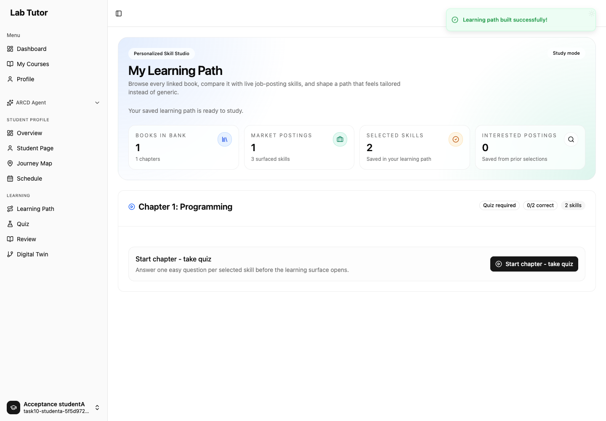

Job evidence and O*NET context,
with the teacher in control.
The integration is implemented and the teacher-to-student workflow passed controlled end-to-end checks. O*NET 31.0 is active in the main local database. The remaining live setup is connecting the existing HeadHunter token to the backend.
43 browser checks, plus recovery and direct storage checks
Official O*NET 31.0, imported and active
Occupation-linked skill and software evidence
What you can do
| Capability | Result |
|---|---|
| Combine sources | Collect explicitly selected job sources alongside O*NET. Each source keeps its own status and warnings; one failed provider does not silently replace another. |
| Choose categories or skills | Select a category, exclude individual skills, save the draft and return later. Agent suggestions remain proposals and respect explicit exclusions. |
| Use occupational context | Choose occupations and inspect available importance, level and software flags. Ratings retain their occupation, release and quality status; missing ratings are not zero. |
| Keep the posting evidence | Store the complete returned vacancy payload, original description, native ID, skill tags and original posting link. Every newly approved skill needs supporting job-posting evidence. O*NET alone cannot satisfy that requirement. |
| Preserve student work | Saved paths, resources, question IDs and quiz progress survive withdrawal and chat clearing. Fresh students cannot select a withdrawn career skill; existing saved work remains usable. |
What the workflow checks proved
- A jobs-only draft can enable O*NET before collection and restore the saved settings after reload.
- Category choices, individual exclusions, posting details and agent proposals persist correctly.
- A skill without job evidence is blocked from approval. Supported skills publish with their references and posting links.
- Prerequisites can be regenerated, reviewed and approved before students join.
- Student selection and real API/SSE path building work. Provider failures preserve questions; recovery adds resources without replacing saved identities.
- Real diagnostic answers are graded and persisted. Resource views, direct links, withdrawal and saved-path recovery retain the expected state.
These checks used the actual UI, authentication, application routes, PostgreSQL and Neo4j. External job-provider, search and model responses were synthetic fixtures. They verify application behavior, not live provider availability or generated learning-content quality. Inspect every scenario.


Live data status
O*NET active Official release 31.0 was imported into lab_tutor_postgres/labtutor. SQL readback confirmed ready/active status, 1,016 occupations and 63,671 evidence records. Import manifest and checksums.
O*NET data: U.S. Department of Labor/ETA, O*NET Database 31.0, licensed under CC BY 4.0. Lab Tutor filters and maps evidence.
Earlier, the connected HeadHunter playground fetched two authenticated vacancy details from a Python search in Uzbekistan. The new backend adapter also passed a replay of those captured responses, preserving IDs, links, complete descriptions, tags and all 60 returned fields.
| Original posting | Original HTML characters | Skill tags |
|---|---|---|
| Vacancy 138247416 | 992 | 0 |
| Vacancy 137196521 | 1,554 | 5 |
Live capture: 10 October 2026, 00:24 UTC. These two real vacancies are separate from the synthetic workflow fixture.
Still needed: the existing token’s protected file location or environment-variable name, plus the registered application User-Agent. The main backend currently has neither LAB_TUTOR_HH_ACCESS_TOKEN nor LAB_TUTOR_HH_USER_AGENT configured. Direct live backend ingestion remains unverified. The existing playground connection is preserved.
Engineering verification and limits
The browser run found and fixed a persistence bug: completed source statuses could revert to “loading” when a candidate refresh ran with the application’s database settings. A real PostgreSQL regression reproduced it, then both database-setting cases passed after the fix. The two-file change passed Ruff, formatting and focused review.
- Final review fixes passed scoped review, lint and build. Affected projection checks passed 7 + 6 cases; consumer checks passed 18 unchanged cases plus 2 corrected fixture cases.
- All 26 affected student-access cases have passing observations across an interrupted full-file run and a clean four-case continuation. This is not one clean full-suite run. The CLI projection regression passed on its final retry: 1 case in 43.46 seconds, with both original 90-second subprocess limits unchanged (child and Docker exit 0).
- Frontend configuration and picker checks used an explicit 30-second diagnostic limit under heavy host load. No default-limit performance guarantee is claimed.
- The fresh acceptance database required real checkpoint initialization before requests; existing lazy initialization can otherwise wait on an authentication transaction. The login test used input placeholders because the existing page attaches labels to wrapper elements.
- Initial fixture/setup attempts are retained separately. The successful workflow results use real application responses; no successful API response was substituted.
Temporary test services, graph storage and the extra regression database were removed. The five previously stopped O*NET containers were restored. Main O*NET data and the existing playground connection were preserved.
Feature commits include 9961355 (source configuration and saved chapter mappings) and db2277b (durable source outcomes). Work remains on feat/headhunter-job-sources; nothing was pushed or merged. Unrelated workspace changes were preserved.
Approved implementation plan · Decisions and tradeoffs · Verification evidence